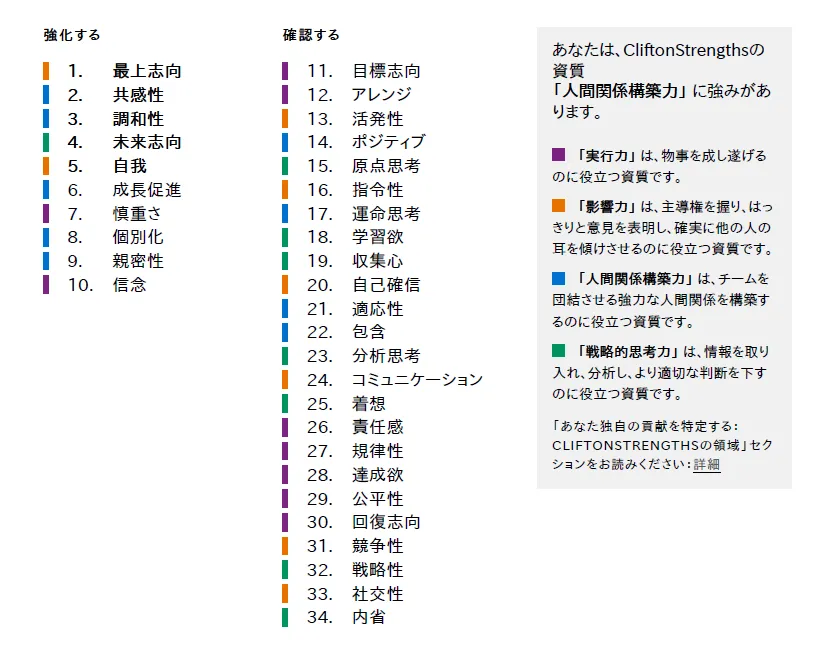
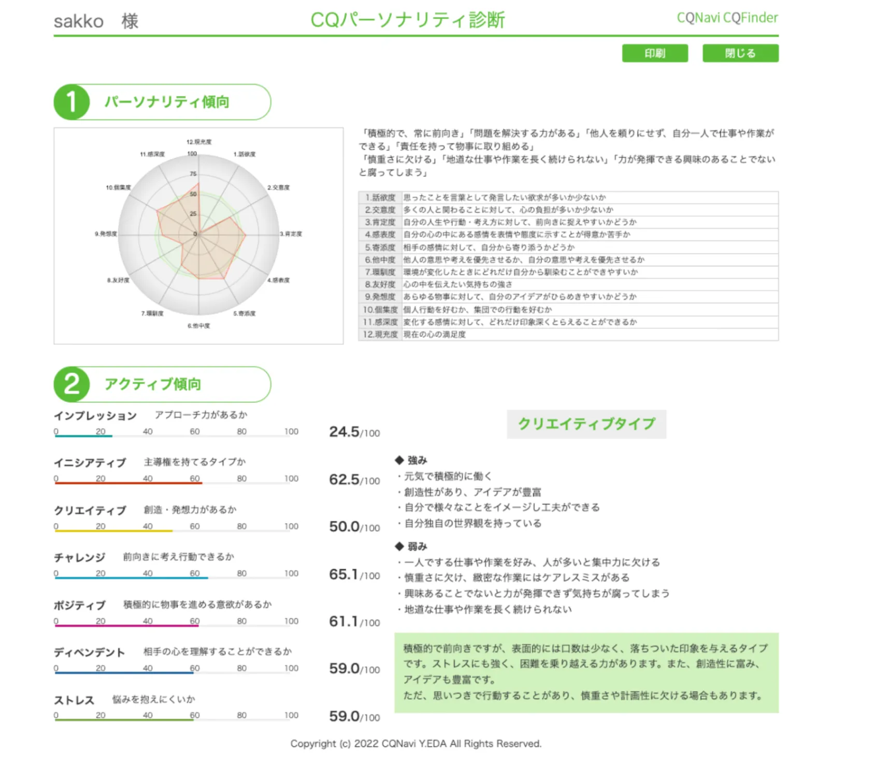

根っこは変わらない。
自分じゃないとやりたくない仕事がある。
現場に入りながら、労務を立て直す社労士へ。
34資質の並び順という地図。TOP10は人間関係構築力5・影響力2・実行力2・戦略1——「深く寄り添い、卓越を目指す」配分です。
クリエイティブタイプ——穏やかな外側に、前向きで創造的な内側。低いアプローチ力は「聞き上手」の設計と重なります。
2026年7月31日、約80分。SF34とCQを並べながら、「強みがわからない」という入口から、信念×自我×現場で立て直す社労士像を一緒に言葉にしました。
2026年7月31日、約80分。sakkoさんは「自分の強みがわからない」と来てくれました。10月の社労士開業が近いのに、自信が持てない。3月の短期離職のあと、1ヶ月ほど家に引きこもったこともある——そんな入口から、セッションは始まりました。
でも話が進むと、別の輪郭が見えてきました。GHの労務を「完璧にやらなきゃ」と整えていた最上志向。手帳に描いた「新幹線で移動して地方で仕事する」という未来像。採用担当一人で新卒採用を立ち上げ、ハロワの職員に電話をかけた経験——一人で役割を明確にして、のびのびやれた時間。
そして終盤、sakkoさんは自分で言いました。「訪問介護の小規模事業者の現場にも入りながら、労務周り全部を立て直したらいいな」——そして、「自分だからこそそういうことがある」。弱さの奥に、信念と自我が一本の線でつながっていた80分でした。

TOP10は人間関係構築力5・影響力2・実行力2・戦略的思考力1。Gallupのレポートでも「人間関係構築力に強みがあります」と示されています——深く寄り添い、丁寧に守りながら、卓越を目指す配分です。
共感性・調和性・成長促進・個別化・親密性——TOP10の半分が人間関係構築力。その上に最上志向1位と未来志向4位、信念10位・自我5位が重なり、「一人ひとりに寄り添いながら、自分の軸で卓越した仕事をしたい」という地図が見えます。

積極的で前向き。創造性とアイデアが豊富で、表面上は物腰が柔らかく穏やかな印象——SF34の「人間関係構築力5つ」と重なります。インプレッション（こちらから積極的にアプローチする力）が低め——広く売り込むより、深く聞いて寄り添う方向性と符合しています。
低い自己開示・アプローチ力は「弱み」ではなく、聞き上手の設計かもしれません。共感性2位・調和性3位・親密性9位——話すより聴いて、深く理解してから動く。採用担当一人で新卒採用を立ち上げ、ハロワ職員に電話をかけた経験も、前に出て売るのではなく相手の立場に入って動くスタイルと重なります。
見比べると、sakkoさんの消耗は「自分らしくない場所にいる」ときと「外に出られていない」ときから来やすい。逆に、役割がはっきりしていて、信念と自我が通る現場では——一人でも、しっかり動けています。
CQでインプレッションが低く、自己開示も控えめ——これを「営業力がない」と読むと苦しくなります。でも80分の中で見えたのは、聞き上手として相手の話を引き出し、深く理解してから動くスタイルです。共感性2位・調和性3位・個別化8位——前に立って売る人ではなく、現場に入って整える人。低自己開示は、信頼ができるまで本音を守る慎重さでもあります。
「年齢的にもう遅いのでは」という不安——慎重さ7位の人にとって、確実な道を選んでから動くのは自然な設計です。4回目の社労士合格、GHでの労務経験、採用立上げ——急がず積み上げてきた事実があります。34歳は「遅い」のではなく、信念10位の根っこが固まってから開業するタイミングかもしれません。慎重さはブレーキではなく、ミスを許されない労務の世界での味方です。
セッション冒頭の「強みがわからない」——これは空白ではありませんでした。話していくうちに、GH労務の完璧主義、採用担当の立上げ、訪問介護の現場イメージ——全部つながっていた。わからなかったのは強みの不在ではなく、「自分だからこそ」という言葉にまだ名前がついていなかっただけ。終盤に「信念が強みなんだな」と自分で言えたのは、その空白が埋まった証拠です。
Circlebackの文字起こしから、セッションで語られた言葉を集めました。読み返すたびに、あの日の温度を思い出せますように。
「自分だからこそそういうことがあるんな」
「信念が強みなんだな」
「訪問介護…現場も少し手伝うから労務周り全部…立て直してたらいいな」
「これはできるなって全然わかんなくて」
「完璧にやらなきゃ」
「手帳に新幹線で移動して地方で仕事する」
「根っこの部分がずっと変わらない…一本筋が通ってて」
「自分じゃなくても全然良い環境だと感じた」
「一人で役割を明確に…のびのびやれた」
「家にこもっていないでもっと人と会ったり…出向かないとダメ」
「強みがわからない」——この状態は、空白期間ではありません。開業前の正しい過渡期です。
信念の根っこは、ずっと変わっていませんでした。変わったのは、その根っこに「最上志向」「自我」「未来志向」という名前がついたこと。3月の引きこもりは後退ではなく、「自分じゃない環境」を見極めるための停車駅。いまは新幹線のホーム——発車時刻（10月開業）を待ちながら、訪問介護の現場に入り、労務を立て直すという次の路線が見えてきたところです。
「これはできるなって全然わかんなくて」——あの言葉、ちゃんと聞いていました。10月開業が近いのに自信が持てない。3月の離職の記憶。家にこもってしまう自分——そういう薄い雲は、これからも何度か出てくると思います。
でもそれは、sakkoさんが弱いからではありません。慎重さ7位が、ちゃんとリスクを見ているからです。最上志向1位が「完璧にやらなきゃ」と基準を上げているから、動き出す前に足が止まる——それも、労務の世界では必要なブレーキです。
引きこもりの期間を経験しているからこそ、「家にこもっていないでもっと人と会ったり…出向かないとダメ」と自分で言えた。不安を消すのではなく、次の停車駅として認識する——それで十分です。
「お、また来たな〜🌥」——それくらいの距離で、大丈夫。雲の日は、手帳に一行だけ未来を書く。それも立派な一歩です。
── 一気に全部やらなくて大丈夫。1つでも、0つでも大丈夫です。
2026年7月31日、約80分（4824秒）。「強みがわからない」から始まって、「自分だからこそそういうことがある」「信念が強みなんだな」で終わった時間です。読み返す本のように、聴き返してみてください。
あの80分を、メモ・文字起こし・録音ごと、
もう一度ひらけます。
sakkoさんへ。
セッションのはじめ、sakkoさんは「自分の強みがわからない」と話してくれました。10月開業前なのに自信が持てない。3月の短期離職のあと、1ヶ月ほど家に引きこもったこともある——そんな正直な入口から、80分が始まりました。
でも、話していくうちに空気が変わっていきました。GHの労務を「完璧にやらなきゃ」と整えていた話。手帳に描いた新幹線で地方に仕事しに行く未来。そして——採用担当一人で新卒採用を立ち上げ、ハロワの職員に電話をかけた経験。
ここで、私は「弱い人」ではなく「役割がはっきりした場所では、一人でもしっかり動ける人」だと思いました。3月に「自分じゃなくても全然良い環境だと感じた」のも、同じ根っこから来ています——自分の軸と合わない場所では、エネルギーが出ない。合う場所では、のびのび動ける。
セッションのクライマックスで、sakkoさんは訪問介護の小規模事業者の話をしました。現場にも入りながら、労務周り全部を立て直す——声のトーンが、いちばん前向きでした。
そして最後、sakkoさんは自分から言ってくれました。
そして——
この2つの言葉を、私はきっとずっと忘れないと思います。だってこれは、私が言ったことでも、診断が言ったことでもなくて、sakkoさんが80分を通して、自分で辿り着いて、自分で受け取り直した瞬間だったから。
「根っこの部分がずっと変わらない…一本筋が通ってて」——この一本筋は、10月の開業以降も、sakkoさんの最大の武器です。最上志向が質を上げ、共感性と個別化が現場に寄り添い、慎重さがミスを防ぎ、未来志向が次の駅を照らす。
そして「家にこもっていないでもっと人と会ったり…出向かないとダメ」——この言葉も、sakkoさん自身から出ました。引きこもりを経験したからこそ、外に出る大切さがわかる。弱さを知っている人ほど、現場に入って立て直す仕事ができる——そう思います。
手帳の次のページ、一緒に楽しみにしています。